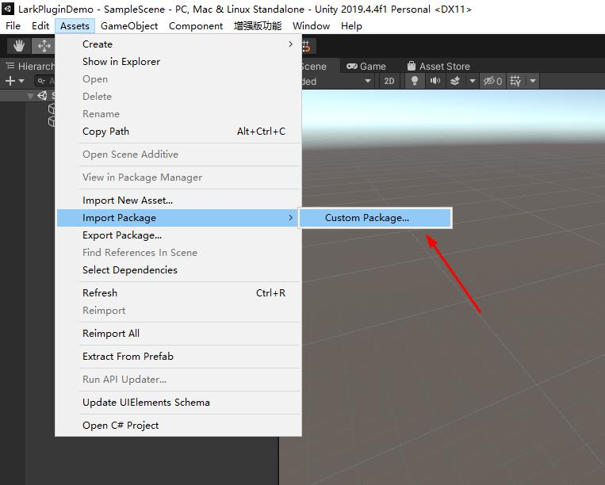
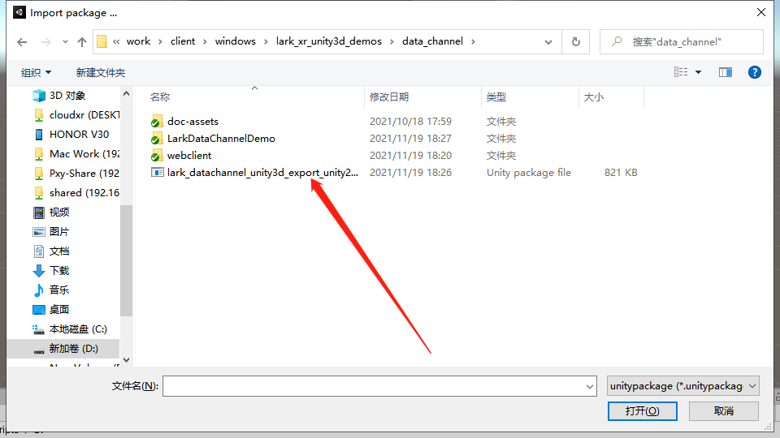
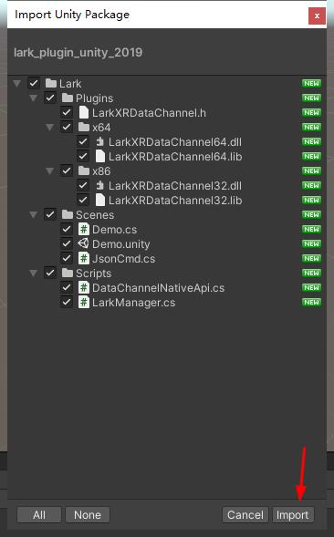
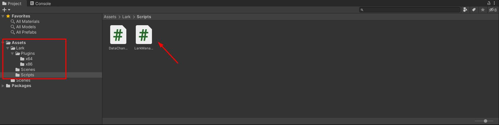
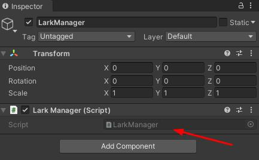
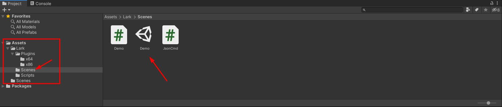
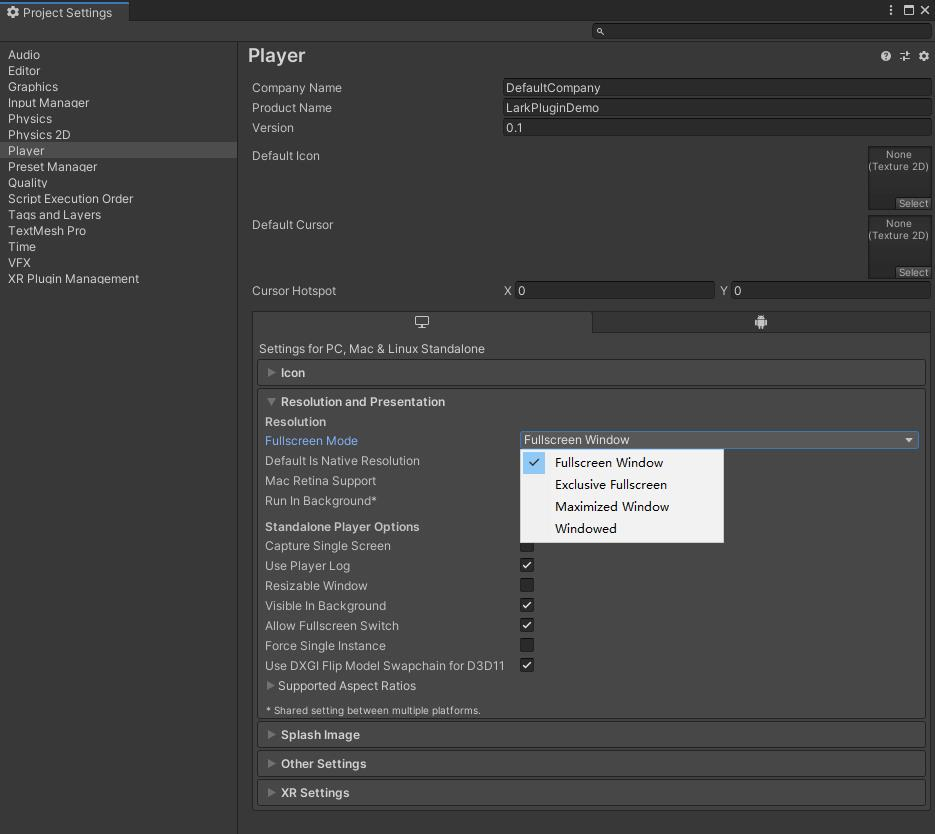
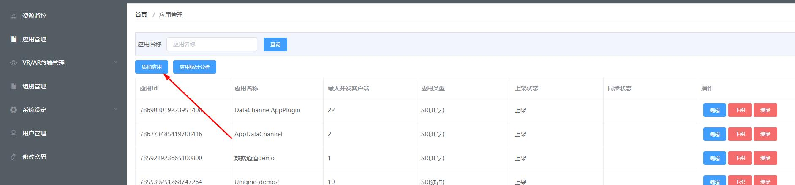
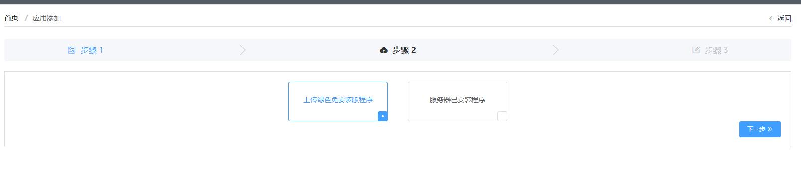
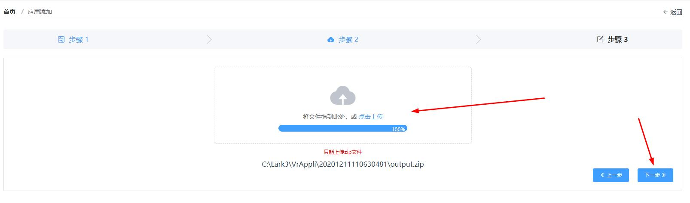

使用预发布的 Lark Plugin 接入
插件版本：lark_datachannel_unity3d_export_unity2019.unitypackage
插件发布环境 Unity3D 2019.4.41f1 windows 版
插件功能
- 管理和连接数据通道服务
导入和使用插件
导入插件
- 菜单栏选择 Assets->ImportPackage->Custom Package


- 勾选全部文件点击 Import

开始使用
- 在 Lark/Scripts/ 下找到 LarkManger 脚本

- 创建 empty object 并将 LarkManger 脚本挂载上

通过 LarkManger 实例即可调用插件提供的接口。如获取 TaskId
lark.LarkManager.Instance.TaskId
数据通道服务
首先设置代理
// TaskStatus 通过监听 task 状态获取客户端连接情况。
// 在应用使用预启动功能时，应用保持长开启状态，当有客户端连接的时候
// Task 状态发生变化。
// status true:客户端连接 false:客户端断开
public delegate void OnTaskStatus(bool status, string taskId);
// 连接数据通道成功
public delegate void OnConnected();
// 收到文本消息
public delegate void OnTextMessage(string msg);
// 收到字节消息
public delegate void OnBinaryMessaeg(byte[] binary);
// 数据通道关闭
public delegate void OnClose(ErrorCode code);
通过 LarkManeger 实例获取 DataChannelNativeApi 实例并设置代理
lark.LarkManager larkManager = lark.LarkManager.Instance;
larkManager.DataChannel.onTaskStatus += OnTaskStatus;
larkManager.DataChannel.onConnected += OnConnected;
larkManager.DataChannel.onText += OnTextMessage;
larkManager.DataChannel.onBinary += OnBinaryMessaeg;
larkManager.DataChannel.onClose += OnClose;
开始连接
lark.DataChannelNativeApi.ApiRestult restult = lark.LarkManager.Instance.StartConnect();
发送字符消息
public void SendText(string txt)
{
lark.LarkManager.Instance.Send(txt);
}
发送字节消息
public void SendBinary(byte[] data)
{
lark.LarkManager.Instance.Send(data);
}
Demo 场景
Demo 场景封装了基本使用流程，可配合 Web 客户端 Demo 一起使用。演示通过数据通道发送 json 封装指令等。

打包和发布
打包
发布成 PC 版并发布到云雀系统上进行测试，并注意选择窗口全屏，不要选择独占全屏.

上传
登录云雀后台，选择应用管理，添加应用

选择上传绿色版本

把发布好的应用程序压缩成一个 zip 文件并上传

智能语音功能
网页端智能语音输入 Demo 参考:https://github.com/pingxingyun/vh-webclient
Lark Plugin 文件夹下保护一个 naudio 库，用于 Demo 场景中播放 mp3
StartAiVoice
如果使用智能语音服务器，应在 StartConnect 返回成功后启用智能语音连接
lark.LarkManager.Instance.StartAiVoice();
智能语音相关回调
larkManager.DataChannel.onAiVoiceURL += OnAiVoiceURL;
larkManager.DataChannel.onAiVoiceStream += OnAiVoiceStream;
Demo 场景
Demo 场景中使用 naudio 库播放 mp3 URL。
// 开启使用 naudio 播放 mp3
#define ENABLE_NAUDIO
下载并使用 naudio 播放智能语音返回的 mp3 url
IEnumerator GetAudioClip(string url)
{
UnityWebRequest www = UnityWebRequest.Get(url);
yield return www.SendWebRequest();
if (www.isNetworkError || www.isHttpError)
{
Debug.Log(www.error);
}
else
{
#if ENABLE_NAUDIO
byte[] results = www.downloadHandler.data;
// 使用 NAudio 将 mp3 转换为 wave 播放
using (var stream = new MemoryStream(results)) {
var reader = new Mp3FileReader(stream);
var wo = new WaveOutEvent();
wo.Init(reader);
wo.Play();
while (wo.PlaybackState == PlaybackState.Playing)
{
yield return new WaitForSeconds(1);
}
}
#endif
}
}
打包发布
- 服务器应确认有智能语音授权
- 在 LarkXR
后台应用管理-通用高级设置-智能语音选择是